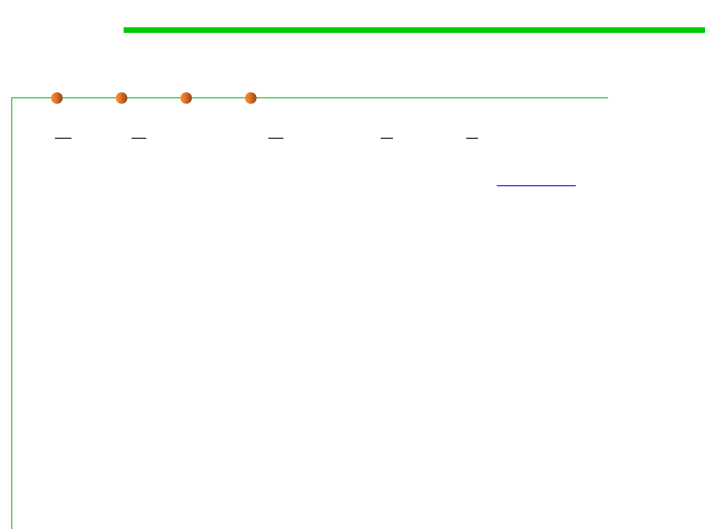

6.1 Metrics and Construction Principles for Maintainability
What’s GRASP patterns
▪ General Responsibility Assignment Software Patterns (principles),
abbreviated GRASP, consist of guidelines for assigning
responsibility to classes and objects in OOP. 通用责任分配软件模式
（原则）
▪ The GRASP patterns are a learning aid to help one understand
essential object design, and apply design reasoning in a
methodical, rational, explainable way.
▪ This approach to understanding and using design principles is
based on patterns of assigning responsibilities to classes.
《Applying UML and Patterns》